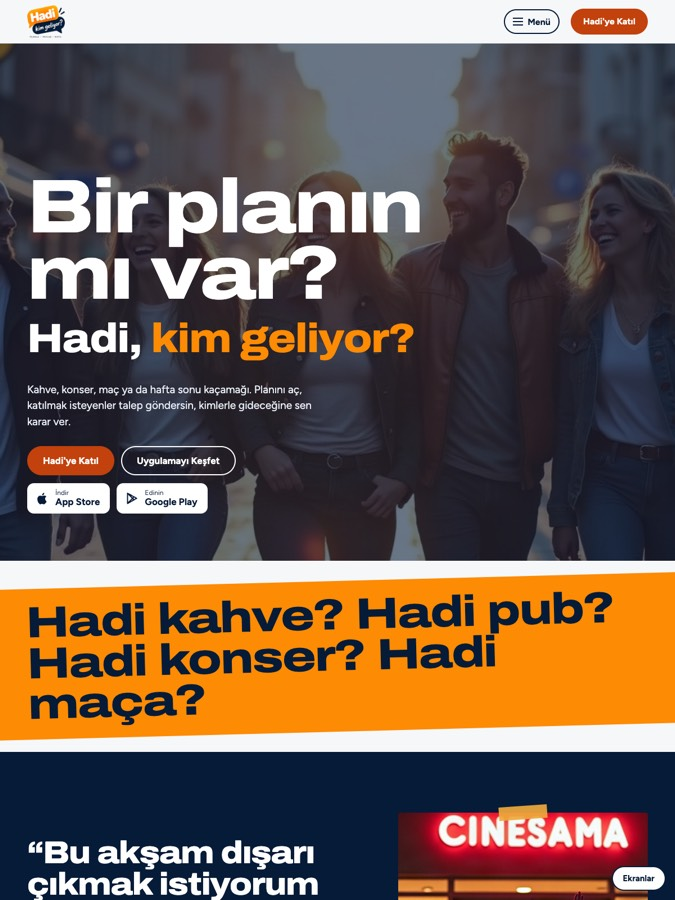

Seçenek 1Şehir Afişi
Şehirdeki konser ve sokak afişlerinin enerjisi: tam ekran sokak fotoğrafı üstünde kocaman "Bir planın mı var?" ve yavaşça dönen "Hadi kahve? / pub? / konser? / maça?" satırı. Örnek planlar duvara yapıştırılmış afişler gibi; altlarında gün-saat, aranan kişi sayısı ve "Katılma talebi" olan bir bilet koçanı var. Cesur, canlı, şehirli.
Seçenek 1'i incele